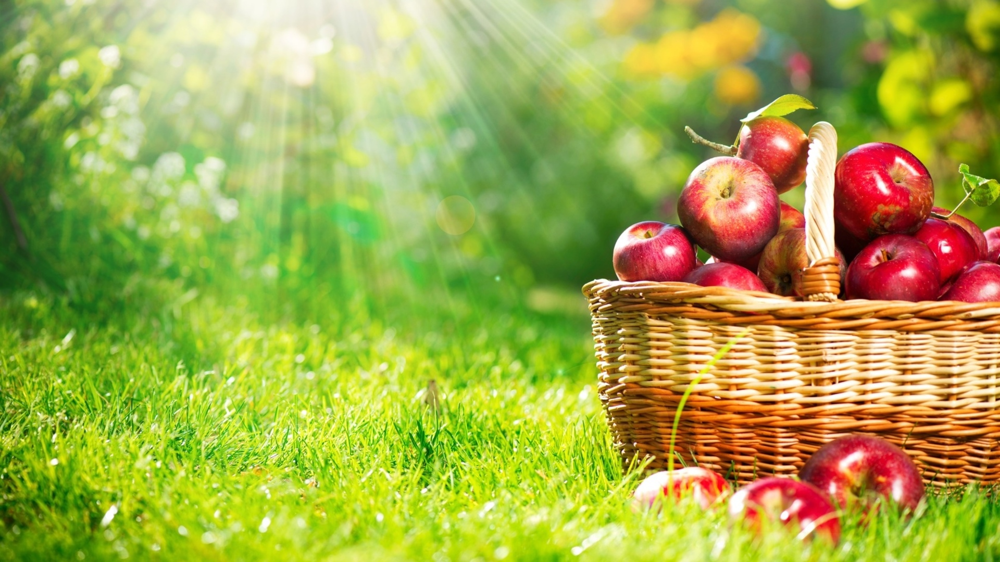

"ЖЕЛЕ ЯБЛОЧНОЕ"Компоненты:
яблоки — 200 гр.
сахар — 0.5 стакана
желатин — 1 чайная ложка
вода — 3/4 стакана
Яблоки нарезать дольками, вынуть сердцевину, залить водой, нагреть до кипения. Всыпать сахар, проварить яблоки так, чтобы они стали мягкими, а затем протереть их. В протертое пюре положить заранее подготовленный желатин и, непрерывно помешивая, проварить до растворения желатина. Разлить в формочки и охладить.
"ЖЕЛЕ ИЗ ЯБЛОК БЕЗ ЖЕЛАТИНА"Компоненты:
сок яблочный — 1 литр
сахар — 1.5 кг.
Разрезанные на куски плоды положить в кастрюлю. Залить водой, чтобы покрыть яблоки. Варить до полного размягчения, после чего выжать сок. В полученный сок всыпать сахар, после этого массу уварить до прозрачности. Если капля на тарелке не растекается и застывает в виде полушарика, горячее желе сливают в стеклянные банки, если растекается — варить еще.
"ЖЕЛЕ ИЗ НЕДОЗРЕЛЫХ ЯБЛОК"Сок из недозрелых яблок не всегда приятен на вкус, но содержит большое количество пектина и кислот, поэтому из него получается хорошее желе. Яблоки мелко нарезать или пропустить через соковыжималку, профильтровать сок через два слоя марли. Сок можно сделать в соковарке. В 1 стакане сока растворить 1 стакан сахара, проварить несколько минут и горячим разлить в банки и закрыть крышками. В яблочный сок хорошо добавить другой сок — крыжовника или красной смородины.
"ЯБЛОЧНЫЙ КРЕМ — 1"Компоненты:
яблоки — 8-10 шт.
лимон — 1 шт.
сахар — 200 гр.
сахарная пудра — 20 гр.
яйца (белки) — 2 шт.
желатин — 12 гр.
Яблоки очистить, нарезать дольками и чуть-чуть проварить в кастрюле, налив немного воды. Протереть через сито в глубокую посуду, добавить сахар, цедру одного лимона и его сок. Добавить взбитые до густоты два яичных белка. Когда крем посветлеет и загустеет, в него надо влить замоченный и прокипяченный желатин, быстро вымешивая массу, выложить ее немедленно в пирог или вазочки. Через минут пятнадцать подавать на стол.
"ЯБЛОЧНЫЙ КРЕМ — 2"Яблочный мусс соединить со взбитыми сливками, белками, приправить ванильным сахаром и лимонным соком.
"МУСС ЯБЛОЧНЫЙ"Компоненты:
яблоки — 280 гр.
вода — 320 гр.
сироп сахарный — 80 гр.
сахар — 60 гр.
желатин — 12 гр.
Яблоки очистить и натереть. Вскипятить воду вместе с очистками и сахаром, процедить. Растворить замоченный желатин в сахарном сиропе, слегка остудить, взбить в густую пену, ввести тертые яблоки, хорошо размешать, разлить в формочки и охладить.
"ЯБЛОЧНЫЙ МУСС С БИСКВИТНОЙ МУКОЙ"2 простых печенья подсушить в духовке, растереть скалкой, просеять сквозь сито, залить горячим сиропом из ? стакана воды и 1 ст. ложки сахара, накрыть крышкой, чтобы крошки разбухли.
Сырое очищенное яблоко натереть на терке, смешать с бисквитной крошкой и взбить вилкой.
"МУСС ИЗ ЯБЛОК СО ВЗБИТЫМИ СЛИВКАМИ"Компоненты:
яблоки — 250 гр.
сахар — 1 стакан
сливки — 1 стакан
желатин — 15 гр.
Яблоки чистим, режем на мелкие дольки, заливаем двумя стаканами воды и варим до мягкости. Процедив через марлю, сливаем сок, а остальную массу протираем через сито. В сок добавляем сахар и замоченный на полчаса в холодной воде желатин. Помешивая, доводим сироп до кипения и охлаждаем. Затем кладем в кастрюлю яблочное пюре и взбиваем венчиком до пенистой массы. Быстро разливаем в вазочки и тоже охлаждаем. Таким же способом взбиваем сливки, только при этом, кастрюлю (не алюминиевую!) требуется поставить на лед.
"СУФЛЕ ИЗ МОРКОВИ И ЯБЛОК"Мелко нарезную морковь залить горячим молоком, тушить до готовности, протереть, добавить сахар, соль и манную крупу, остудить. Ввести яйцо, натертое яблоко, размешать, выложить в форму, запечь в духовке.
"СУФЛЕ ИЗ СУШЕНЫХ ЯБЛОК"Компоненты:
яблоки сушеные — 200 гр.
яйца (белки) — 5 шт.
сахар — 250 гр.
масло сливочное — 250 гр.
сахарная пудра — 30 гр.
вода — 200 мл.
кислота лимонная — 1 гр.
Сушеные яблоки сварить до готовности, добавив в воду сахар, лимонную кислоту. Затем все протереть вместе с отваром. Белки взбить в пену и осторожно соединить с протертыми яблоками. Массу выложить в форму, смазанную маслом, и выпекать в духовке. Готовое суфле посыпать сахарной пудрой.
"СУФЛЕ ИЗ ЯБЛОК"Компоненты:
яблоки — 500 гр.
сахар — 80-100 гр.
сухари толченые — 60 гр.
масло сливочное — 25 гр.
яйца — 3 шт.
лимон — 1 шт.
цедра апельсина
ванилин
Печеные яблоки протереть через сито. Масло (20 гр.) растереть с сахаром, прибавить желтки, снова растереть, добавить яблоки, взбитые в пену белки, толченые сухари, апельсиновую цедру, лимонный сок по вкусу; вымешать, выложить на смазанное маслом блюдо и запечь.
"ПАРФЕ ЯБЛОЧНОЕ"Компоненты:
пюре яблочное — 1 стакан
сахар — 1 стакан
сливки — 0.5 стакана
Пюре смешать с сахаром, поместить в холодильник на 1 ч. Взбить на холоде сливки, добавить лимонный сок, а затем соединить с яблочным пюре. Выложить в формочки и охладить.
"ПАРФЕ ИЗ ЯБЛОЧНОГО СОКА"Компоненты:
сок яблочный — 200 гр.
сливки — 500 гр.
сахар — 200 гр.
вода — 100 мл.
молоко — 50 мл.
яйца (желтки) — 3 шт.
Сок смешать с сахаром, яичные желтки растереть, развести с горячим молоком, проварить до загустения, охладить. Охлажденные сливки взбить и ввести в них подготовленную смесь. Полученную массу положить в формы и заморозить.
"ПУДИНГ ИЗ ЯБЛОК И КАБАЧКОВ"Компоненты:
яблоко — 1 шт.
кабачок — 1 шт.
молоко — 1 столовая ложка
масло или маргарин — 1 столовая ложка
сметана — 1 столовая ложка
яйцо — 1 шт.
сахар — 2 чайные ложки
крупа манная — 2 чайные ложки
Кабачок очистить, нашинковать и тушить с молоком и маслом до полуготовности. Затем добавить нашинкованные яблоки и сахар и тушить еще 5 минут, после чего всыпать манную крупу, подержать кастрюлю под крышкой на краю плиты 5-10 минут и слегка охладить. После чего добавить желток и взбитый белок, вымешать, выложить в формочку, смазанную маслом и запечь. Подавать со сметаной.
"ЯБЛОЧНЫЙ ПУДИНГ — 1"Компоненты:
яблоки крупные — 8-10 шт.
масло сливочное — 50–60 гр.
яйца — 8 шт.
сахар
калач сдобный
молоко
миндаль
цедра лимона
Крупные кисловатые яблоки очистить от кожуры, нарезать тонкими дольками и, заправить сахарным песком, отварить до густоты пюре. Сливочное масло размешать до гладкости, вбить в него 4 целых яйца и отдельно 4 желтка. Остывшую яблочную массу смешать с куском сдобного калача, незадолго до этого замоченного в молоке, размельченным миндалем, цедрой лимона и небольшим количеством сахарного песка. Соединить с массой из масла и яиц. Взбитые в пену белки четырех яиц осторожно смешать с яблочным пюре, поместить в форму, смазанную сливочным маслом, и запечь.
"ЯБЛОЧНЫЙ ПУДИНГ — 2"Яблочный сок, сливочное масло и сахар вскипятить. Добавить натертые на крупной терке яблоки, лимонную цедру и манную крупу и варить при постоянном помешивании. Подмешать желтки и немного коньяка. Охладить.
Подавать на стол с ванильным соусом или взбитыми сливками.
"ЯБЛОЧНЫЙ ПУДИНГ С ОРЕХАМИ"Компоненты:
яблоки — 300 гр.
молоко — 500 мл.
яйца — 3 шт.
сахар — 75 гр.
орехи грецкие — 125 гр.
крупа манная — 40 гр.
масло сливочное — 25 гр.
соль
Орехи поджарьте, измельчите и несколько минут проварите в молоке. Затем, помешивая всыпьте манную крупу, доведите до кипения. Яичные желтки разотрите добела с сахаром. Нарежьте дольками яблоки (без сердцевины). Все это смешайте с приготовленной смесью, посолите. Последними введите крепко взбитые белки и осторожно перемешайте.
Яблочный пудинг готовят на водяной бане: выложите массу в смазанную форму и на 20–30 минут поставьте ее в кипящую воду.
"ЯБЛОЧНЫЙ ХОЛОДНЫЙ ПУДИНГ"Возьми 600 гр. сушеных яблок, свари, слей воду, протри яблоки сквозь сито, положи в яблочную массу 3 яичных белка и 200 гр. сахара и сбивай метелкой с час времени, поставь посудину в лед, потом выложи на блюдо и укрась вареньем.
"САМБУК ИЗ ЯБЛОК — 1"Компоненты:
яблоки — 5–6 шт.
сахар — 2–3 столовые ложки
желатин — 1–1.5 чайной ложки
яйцо (белок) — 0.5 шт.
СИРОП:
сахар — 0.5 столовой ложки
вода — 1–1.5 столовой ложки
сок фруктовый — 0.5 столовой ложки
Яблоки (лучше антоновские) промывают холодной водой, разрезают пополам, удаляют сердцевину с семенами, кладут на противень, вливают немного воду, пекут 20–30 минут в духовом шкафу при 120–140 °C до мягкости. Охлаждают, протирают.
В полученное пюре кладут сахарный песок, яичные белки. В холодном помещении взбивают до увеличения объема в 2–3 раза (масса должна быть пенистой). Не переставая взбивать, вливают тонкой струйкой распущенный на водяной бане желатин, не допуская образования комков.
Готовую смесь разливают в формы или на белые противни. Охлаждают. При подаче поливают сиропом.
"САМБУК ИЗ ЯБЛОК — 2"Компоненты:
яблоки — 2 шт.
сахар — 100 гр.
яйца (белки) — 2 шт.
сливки — 200 гр.
кислота лимонная
желатин
Яблоки испечь, охладить и протереть сквозь сито. В пюре положить песок, взбитые белки, размешать, поставить на лед, взбивать до пышной пены. Размоченный желатин соединить с небольшим количеством воды и при непрерывном помешивании нагреть до полного растворения и влить во взбитую массу, непрерывно помешивая. Ввести взбитые сливки, выложить самбук в вазочки.
"САМБУК ИЗ ЯБЛОК — 3"Компоненты:
яблоки — 400 гр.
сахар — 140 гр.
желатин — 12 гр.
яйцо (белок) — 1 шт.
Нарезанные яблоки испечь, остудить и протереть через сито. Полученное пюре взбить с сахаром и одним белком в пышную массу, чтобы объем увеличился в 4–5 раз, соединить с растворенным в воде желатином, разлить в формочки и охладить. Подавать с сиропом.
"ДЕСЕРТ ИЗ ЯБЛОК"Яблоки очистить от кожицы, удалить семенное гнездо, наполнить кубиками сахара, изюмом, миндальными орехами и яблочным вином. Потушить и подавать на стол с ванильным мороженым.
"ТУШЕНЫЕ ЯБЛОКИ"Компоненты:
яблоки — 4 шт.
сироп вишневый или клубничный — 100 гр.
масло сливочное — 50 гр.
Яблоки очистить от кожуры и семенной части, нарезать кружочками. На большую сковороду выложить кружочки из яблок, масло, сковороду закрыть крышкой и тушить яблоки на слабом огне около 5 минут. После чего перевернуть кружочки и тушить еще 5 минут. Готовые яблоки залить сиропом и подать к столу теплыми.
"ЯБЛОКИ"Взять 800 гр. лучших яблок, очисти их и вынь сердцевину, но так, чтобы яблоки остались целыми, положи в кастрюлю, намазанную на дне маслом, налей немного воды, прибавь кусок корицы, ложечку коньяку и сахару. Варить на легком огне, чтобы яблоки остались целы. Когда они сварятся, положить на глубокое блюдо. В каждое яблоко положить ложку мармелада из абрикосов или слив, обсахаренную лимонную корку, истолочь бисквиты и посыпать ими яблоки, приготовьте крем (ванильный или лимонный) как можно гуще и залейте им яблоки совершенно. Когда все поспеет — глазируйте сверху.
"ЯБЛОКИ ИЛИ ГРУШИ СО СЛИВКАМИ"Компоненты:
яблоки или груши — 5–6 шт.
сливки или сметана — 0.5 стакана
пудра сахарная — 1–2 столовые ложки
орехи — 6–8 шт.
Промытые и очищенные от кожицы яблоки или груши разрезают пополам и, удалив сердцевину с семенами, варят в подкисленной лимонной кислотой воде до готовности. Охлаждают. Раскладывают в вазочки.
Сливки (можно сметану) взбивают с сахарной пудрой с добавлением небольшого количества измельченных поджаренных орехов. Взбитой массой заливают подготовленные яблоки или груши. Сверху посыпают измельченными орехами.
"ЯБЛОКИ В СМЕТАНЕ"Компоненты:
яблоки — 4 шт.
сметана — 2 стакана
сахар — 1 столовая ложка
Нарезать дольками яблоки, залить сметаной и кипятить до коричневого цвета и загустения массы. Добавить сахар и остудить.
"ЯБЛОКИ С ВАНИЛЬНЫМ СОУСОМ"Яблоки сварить в воде, приправить ванилином и сахаром. Подавать к столу с холодным или теплым ванильным соусом.
"ЯБЛОКИ С ОРЕХАМИ"Компоненты:
яблоки крупные — 4 шт.
орехи — 8-10 шт.
сахар — 1 столовая ложка
сметана — 2–3 столовые ложки
пудра сахарная с ванилью
Яблоки помыть, вынуть сердцевину. Орехи истолочь, смешать с сахаром и сметаной, начинить ими яблоки. Поместить яблоки на смазанный маслом противень, подложив фольгу или пергамент, и запечь в хорошо нагретой духовке. Подать горячими, присыпав пудрой с ванилью.
"ЯБЛОКИ С РЯБИНОЙ"Кислые или кисло-сладкие яблоки вымойте, выньте сердцевину и косточки, начините рябиной (хорошо, если она схвачена морозцем), посыпьте сахарным песком. Яблоки запекайте в духовке на ситом противне или сковородке. При этом следите, чтобы яблоки не полопались.